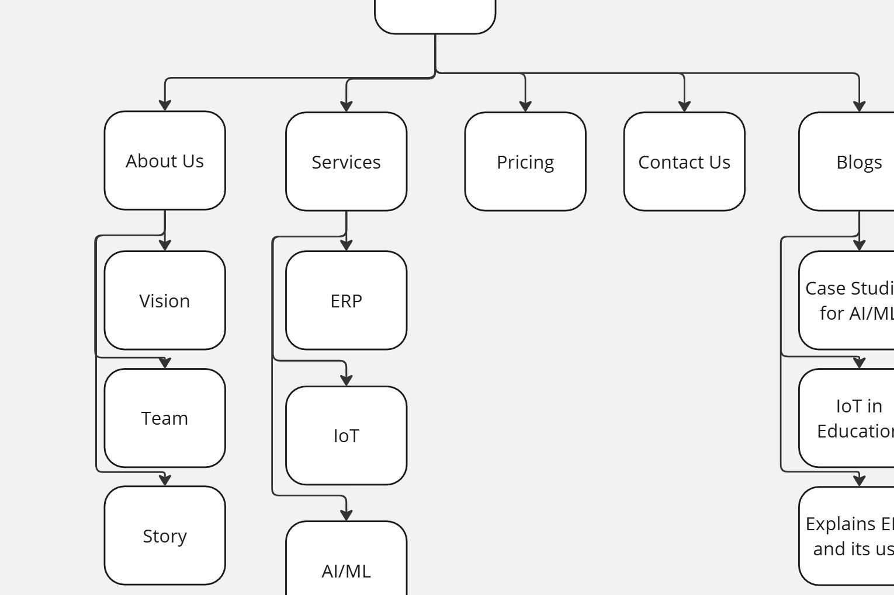

how i redesigned contenttattva’s website?
it was summer of 2024, and i wanted learn how to make the company’s new brand identity
Last summer, I was bored and I wanted to learn Figma better. In my spring semester (of 2024), I had worked with a few classmates to make a UI/UX project for a student portal. While we used Axure RP and focused on a lot of design principles, I wanted to challenge myself.
Hence, over the summer, I spent a few weeks learning how to use Figma properly and effectively by learning about global variables, components, and having a brand identity. After making a few projects to understand my fundamentals, I wanted to try out freelancing. Through connections, I knew a startup with an outdated website and wanted to offer them my services.
When I first met the founders, I had to do a lot of research on the types of websites they would like to have and what kinds of content should I add. To simplify my research, I followed a UX process where I found the problem, solution and then the discover, define, idea, design and finally testing process.
So, what is the problem?
The problem was the website was old and not responsive with a lot of placeholder content. It did not match the company’s values as they worked as an ERP firm.
Then, how did you fix it?
It required a lot of research as I made a new high-fidelity prototype to match the company’s vision, with an updated moodboard, content and even a logo. Finally, I dabbled at Wordpress to replicate the design.
Design Process
Define
In my first meeting, we had established three pillars of design for this website:
- identity
- customer satisfaction
- efficiency
Discover
Before I went on to change anything, I had documented the website’s contents to know what exactly their services are. During this time, I would have a quick check in with the founders to clarify my doubts and what services they are focusing on for their future. The company initially started as a content writing agency but it evolved into an enterprise resource management firm so we had to slash out a few of its old services.
While my primary source content was the founders, I also did market research to see how other ERP firms are building their sites. For example, I looked for other ERP startup firms like AppInventiv, Itransition and SAP (of course.) The following features stood out to me about these sites:
- Having an FAQ page to answer your potential clients’ questions
- A good color scheme to reflect your values
- One page design to make it easier to find FAQ, services, clients, experiences and contact us form
- With the last one, the collapsible menu to know about its services and what exactly they offer.
With this research, I noticed that having a clear definition of what you’re offering and multiple ways for clients to contact you can be a great way to improve user experience. Additionally, we needed to add an FAQ page so that required more research.
Since this was a one-woman project, I had to envision the brand identity, write some of its content if needed, make prototypes and conduct its testing.
Analysis & Planning
Now that I have collected all the elements that I might require, I have started working on documentation and writing sample articles. Since I had saved all of the content on a single google docs, I could now go back and see what changes I would make. Some of the changes I had made were -- company’s about page, values, team’s introductions and their services. My rewrites had focused more on what they have achieved and how to accomplish it using the STAR approach (Situation, Task, Action and Result.) By giving concrete examples, I wanted to increase the company’s credibility.
After I had written all the content, I had sent it to their content writer to make sure it is factually correct. While I was waiting for the approach, I started making sitemaps and wireframes to have an idea of how the website would look like.
sitemap
wireframes

UX Studies
With the help of ChatGPT, I had made a few UX studies to know what are the things potential clients would want.
Company Profile
TechSolutions Inc is a medium sized IT company with 200+ employees and is looking for an ERP solution to streamline their internal processes, manage resources more efficiently to improve overall productivity.
User Profile
Alex Ranjan is an Operations Manager in the company.
His goals are:
- Improve operational efficiency and reduce manual processes.
- Gain real-time insights into a company's performance for informed decision making.
- Enhanced collaboration and communication.
- Currently is using manual processes, leading to data inefficiencies.
- Needs a user-friendly solution with intuitive navigation and comprehensive functionalities to meet the company’s diverse needs.
- Frustrated with the lack of integration between different departments which resulted in communication gaps.
Design
Something I made for fun-- this logo :)
Feel free to check out my figma here :)